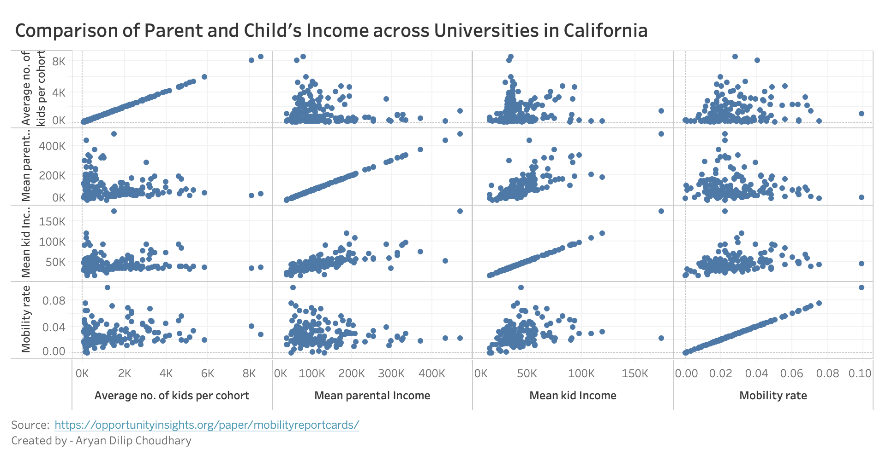

This is the first page for the homework 2 for the course CS:360 Data Visualization. This page contains information about site from where the data is collected for visualization, what type of visualizations are created from the data, my self-assessment for the grade I should earn for the homework, and my professional information.
The exact dataset is the “Baseline Cross-Sectional Estimates of Child and Parent Income Distributions by College” dataset (also referred to as “Online Data Table 2”). The dataset can be found here.
Put a citation here, possibly link to the dataset license information directly.
Information about the data elements are given below:
super_opeid: Institution OPEID / Cluster ID when combining multiple OPEIDs:
-99 = late goers (attended college between 23-28)
-9 = Never attended college (up to and including year 2013)
-1 = attending a college with insufficient data (less than 100 students on average or incomplete data)
>0 = specific colleges
name: Name of college (or college group)
type: Type:
1 = public
2 = private non-profit
3 = for-profit
tier: Selectivity and type combination:
1 = Ivy Plus
2 = Other elite schools (public and private)
3 = Highly selective public
4 = Highly selective private
5 = Selective public
6 = Selective private
7 = Nonselective 4-year public
8 = Nonselective 4-year private not-for-profit
9 = Two-year (public and private not-for-profit)
10 = Four-year for-profit
11 = Two-year for-profit
12 = Less than two year schools of any type
13 = Attending college with insufficient data
14 = Not in college between the ages of 19-22
tier_name: Name of college tier
iclevel: Four-year ot two-year college:
1 = Four-year
2 = Two-year
3 = Less than Two-year
region: Census region:
1 = Northeast
2 = Midwest
3 = South
4 = West
state: State
cz: Community zone ID
czname: Community zone name
cfips: Combined state and county fips code
county: County
multi: Indicator that equals 1 if multiple colleges (IPEDS Unit IDs) are grouped in this Super OPEID
count: Average number of kids per cohort
female: Fraction female among kids
k_married: Fraction of kids married in 2014
mr_kq5_pq1: Mobility rate (joint probability of parents in bottom quintile and child in top quintile of the income distribution)
mr_ktop1_pq1: Upper-tail mobility rate (joint probability of parents in bottom quintile and chile in toop 1% of the income distribution)
par_mean: Mean parental income
par_median: Median parent household income (rounded to nearest $100)
par_rank: Mean parental income rank
par_q[PARQUINT]: Fraction of parent in an income quintile [PARQUINT]. 1 is the bottom quntile and 5 is the top
par_top[PCTILE]pc: Fraction of parents in the top percentile [PCTILE]. For instance, par_toppt1pc refers to parents in the top 0.1% of the income distribution
k_rank: Mean kid earnings rank
k_mean: Mean kid earnings
k_median: Median child individual earnings in 2014 (rounded to the nearest $100)
k_median_nonzero: Median child individual earnings among positive earners in 2014 (rounded to the nearest $100)
k_0inc: Fraction of kids with zero labor earnings
k_q[KIDQUINT]: FFraction of kids in an income quintile [KIDQUINT]. 1 is the bottom quintile and 5 is the top
k_top[PCTILE]pc: Fraction of kids in the top percentile [PCTILE]. For instance, top1pc refers to childern in the top 1% of the income distribution.
k_rank_cond_parq[PARQUINT]: Mean kid earnings rank conditional on parent in quintile [PARQUINT]
kq[KIDQUINT]_cond_parq[PARQUINT]: Probability of kid in quintile [KIDQUINT] conditional on parent in quintile [PARQUINT]
ktop1pc_cond_parq[PARQUINT]: ] Probability of kid in top 1% conditional on parent in quintile [PARQUINT]
k_married_cond_parq[PARQUINT]: Fraction of kids married conditional on parent in quintile [PARQUINT]
shareimputed: Share of count-weighted data that was imputed using information from the 1983-84 cohorts
imputed: Indicator if any data for that super_opeid was imputed
Wrangling
Perhaps you had to do some data wrangling to the original dataset to prepare it for visualization. This would be a great place to discuss some of that wrangling.
You can even put code into these pre blocks.
It will preserve whitespace.
That is helpful for formatted code.
You can alternatively embed a Gist if you want. There is an "embed" button on the Gist page and results in something like this:
Visualizations
Ideally not everything would be on a single page like this example. Instead, you might want to put each section in its own webpage. You would need to carefully replicate the page template (with the header, navbar, and footer) and make the necessary updates. For example, you want the "About" navbar item to be considered active on an "About" web page.

The D3 v5 version of the above prototype is given below:
Mobility Rate of Universities in California
Shows the median parent household income (adjusted for inflation) versus mobility rate, calculated as the percent of students with parents in the bottom 20% of income distribution that reach the top 20% in income distribution. Circles are sized by average number of students per cohort, and colored by the change in the percent of parents from the bottom 40% of income distribution from 1980 to 1991. Source: https://opportunityinsights.org/data/
Instructions
You will likely need to include instructions on how to interpet and use the visualization. In the case above, if you click the three dots above it will open a menu where you can either save the visualization to a SVG or PNG, or alternatively open it up in the online Vega Editor.
Discussion
You may also need other sections, like a discussion section, per-visualization section on data wrangling, and others. Because of the extra content and code visualizations take, it might be worthwhile to break up your pages into one home page and then one page per visualization.
Thanks to Person Name for their suggestion to do something with the visualization.
Grade
Letter
Done?
Description
D
Discussion of how this grade level was satisfied. Exactly how this section should look will depend on the assignment in question. There is no requirement for formatting in this way. This is just an example of what a table element might look like for this informaiton.
C
Discussion of how this grade level was satisfied.
B
Discussion of how this grade level was satisfied.
A
Discussion of how this grade level was not satisfied.